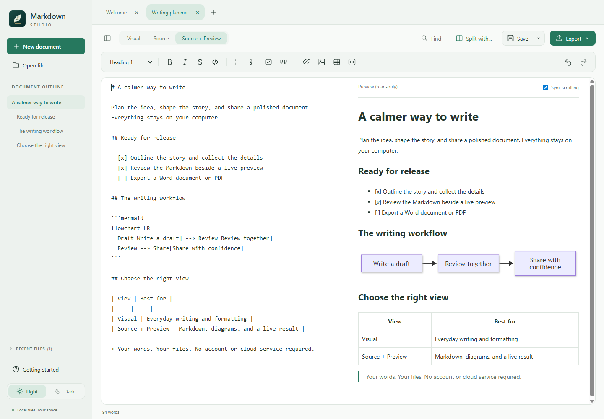
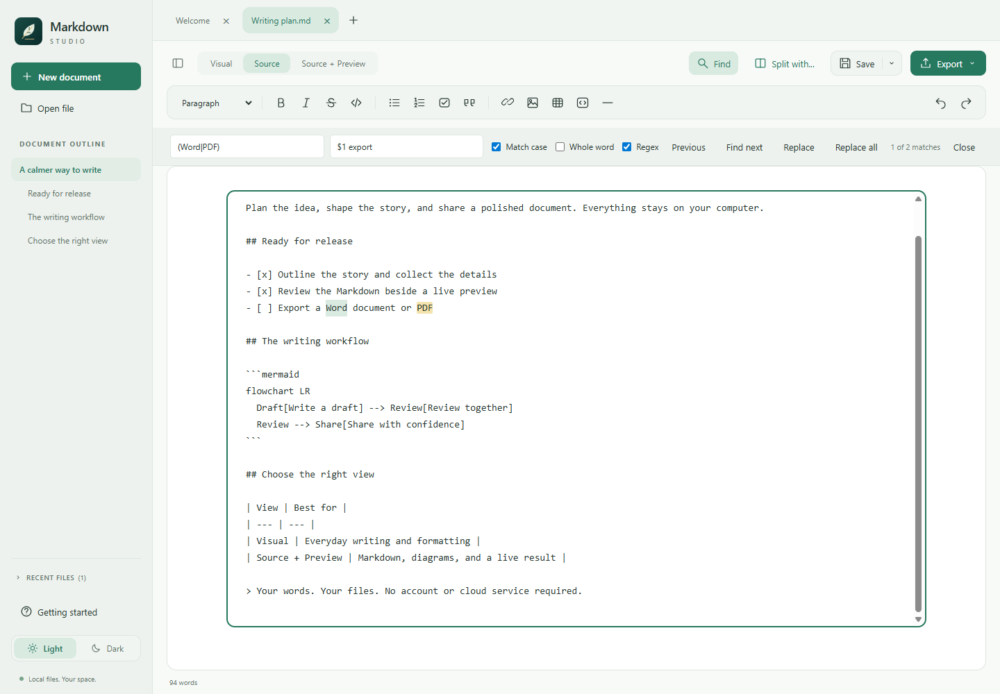

Visual or source. Your choice.
Write with formatting, lists, tables, and checkboxes, or edit exact Markdown in Source. Source + Preview adds a read-only rendering alongside your text.

Windows x64 / Local-first / MIT licensed
A calm space for Markdown. Write visually or work in Source + Preview, bring ideas to life with offline diagrams, and export your work to Word or PDF.
Opens GitHub Releases. Choose the Windows x64 .msi; source ZIP and SHA-256 checksums are listed alongside it. The installer is unsigned and may trigger Windows or browser warnings.
Real screenshots of the desktop application, using sample documents. No accounts, document uploads, or cloud sync.



No account, analytics, or document uploads. The installer includes the desktop runtime; Node.js, Word, and Pandoc are not required.
Write with formatting, lists, tables, and checkboxes, or edit exact Markdown in Source. Source + Preview adds a read-only rendering alongside your text.
Open multiple tabs, pair two files, resize the divider, and work independently in either pane. Light and Dark themes and Focus mode keep the workspace adaptable.
Render supported Mermaid diagrams locally in Visual and Preview. Supported diagrams become images in Word and PDF exports.
Export the active document to Word or PDF, including supported images, syntax-highlighted code, and diagrams. Export does not save the Markdown file.
Search with case, whole-word, and regex options, use capture-group replacements, follow the heading outline, and refresh a generated table of contents.
Choose embedded images or relative assets. Unsaved-change prompts, external-edit detection, atomic saves, and recovery drafts help protect work. Recovery is not a backup.
Windows 10/11 / x64
Unsigned software. The application and MSI are not code-signed. Windows, browsers, or organization policies may warn about or block them. Install only software you trust, verify the checksums, and follow your organization's policies. Do not disable security protections. Other operating systems and architectures are not packaged or tested.
Markdown Studio is MIT licensed and shared as-is, without support or promised maintenance. Keep backups of important documents.
Independent forks are welcome, including AI-assisted changes. Review and test your version yourself, identify it as your fork, and define your own support policy. See the support policy, forking guidance, and build instructions.